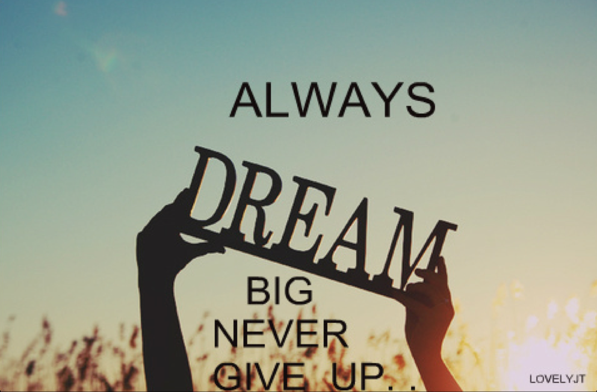

Don't Give Up
By HENRIK EDBERG 01/10/2015“When you get into a tight place and everything goes against you, till it seems as though you could not hang on a minute longer, never give up then, for that is just the place and time that the tide will turn.” Harriet Beecher Stowe
Some days are light and filled with inspiration. Some days are simply routine.
And on some days you may feel like just giving up.
Giving up on your new habit of working out or eating healthier. Giving up on your blog or business because you haven’t had the results you expected or wanted. Giving up on feeling better about yourself. Giving up on dating because you can’t seem to find the right person or maybe even have a good date at all.
Winding up in those situations are part of making positive changes in life. But what you do when you feel like giving up will determine a lot about where your life will go.
In today’s article I’d like to share the tips and insights that have helped me to hold on or to change direction on those difficult days.
Tap into realistic expectations.
This one has also been very important.
Tap into realistic expectations not by listening to advertising that promises you quick results. Not by listening to the perfectionism - from the people around you or yourself - that allows no mistakes or failures.
Tap into it by listening to the people who have already gone where you want to go. Listen to the people who know what works and how you will stumble and fail along the way and can tell you how long your journey may take.
You"ll probably not get an exact blueprint. But the things people can tell you in person or via books and blogs can be a great guidance.
Just for today!
Here’s a little phrase I got from Brian Tracy that I often use when I’m having a bad day with a new habit. I say to myself: Just for today I will XX!
Replace XX with what you will do just for today such as getting exercise, getting going with the most important task first thing in the day or eating a healthy lunch.
By telling myself that I only have to do it today I release the mental burden of the past times I did it and future times when I will do it. And so the task becomes much lighter and the inner resistance melts away.
Plus, it also reminds me that the period that I am investing in changing a habit is not the rest of my life. After 30 days or so the habit will mostly be automatic so it is not something I have to do on willpower for the next few years or decades.
And guess what, when tomorrow comes I’ll probably have a good day again with less resistance and I will most likely feel like doing the task again.
Quit and try something else.
Sometimes it is not time to give up. But it may be time to quit what you are doing and to try something else.
If you feel like giving up or you are bored a lot, if you feel no real passion or excitement or curiosity about a change or your current path then ask yourself the two questions below. Because then it may be time to quit doing this and to spend your time and energy on something you truly want to do.
Am doing this because I truly want it? Or am I doing it because someone told me to or because so many people around me seem to have done it or are working on it?
What you want isn't easy to know before you get started though. You may need to try different paths before you find one that fits you. And just because everyone around you seems to love jogging doesn't mean that you have to love it or that you have to give up on the habit of regular exercise.
Try walking, biking, playing badminton or table tennis instead. Try a new way of doing what you want and see if it is a better fit and more enjoyable for you.
